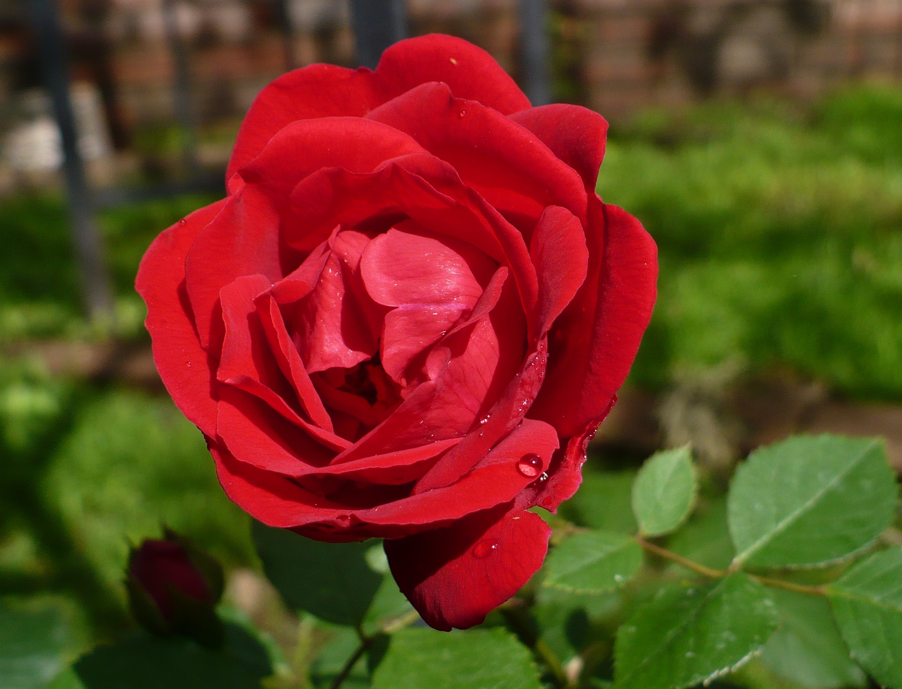
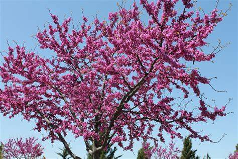

The land that today makes up Oklahoma was added to the United States as part of the Louisiana Purchase of 1803. Throughout the 19th century, the U.S. government relocated Indian tribes from the southeastern United States to the area, and by 1900, over 30 Indian tribes had been moved to what was originally called the Indian Territories. At the same time, ranchers in Texas began to move into the area in search of new pasture lands, and the government eventually opened the land to settlement, creating “land runs” in which settlers were allowed to cross the border at a particular hour to claim homesteads. Settlers who broke the law and crossed the border sooner than allowed were called “sooners,” which eventually became the state’s nickname. Oklahoma became the 46th state in 1907, following several acts that incorporated more and more Indian tribal land into U.S. territory. After its inclusion in the union, Oklahoma became a center for oil production, with much of the state’s early growth coming from that industry. During the 1930s, Oklahoma suffered from droughts and high winds, destroying many farms and creating the infamous dust bowl of the Great Depression era.
| Date of Statehood | Capital | Population | Size |
|---|---|---|---|
| November 16, 1907 | Oklahoma City | 3.96 million | 69,899 square miles |
Labor Omnia Vincit (“Labor Conquers All Things”)
Oklahoma Rose
Scissor-Tailed Flycatcher
Redbud
Interesting facts